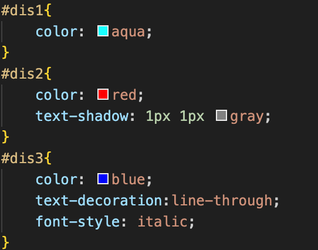
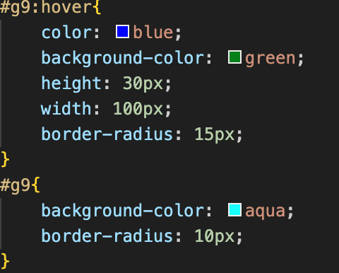
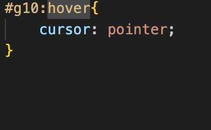
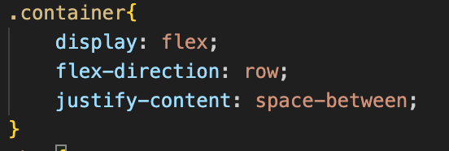
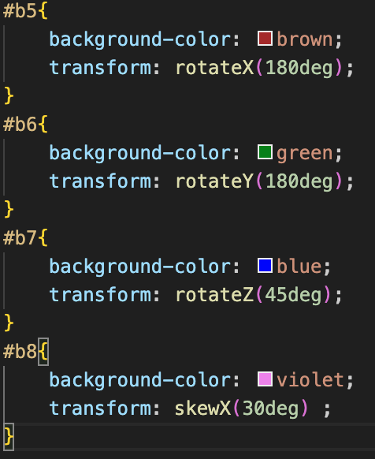
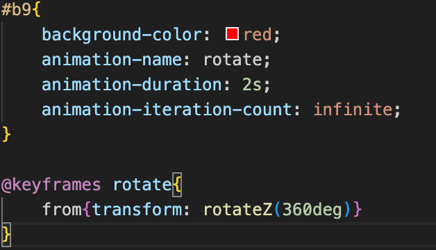

This page is made up of HTML and CSS programming languages. CSS is a programming language that allows for styleing and modification of HTML code. It allows webpages to look more aesthetic and makes the user interface better. There are multiple examples of what you can do with CSS in this page. There are many more things you can do with CSS found in the Extra Resources page.
CSS allows for different fonts and colors of text. You can change the color to any color with the command shown in line 2. You can also also add a shadow to text shown in line 5. You can change the style of the font shown in line 9. There are the basic commands for text that let you change how the text appears. The text shown below is the result of the CSS code.
CSS
alows for
different fonts
and colors
CSS allows for allows for actions to happen when you hover over objects. When you hover over a button you can change the color and size of the button. The color of the button can be changed through the command shown in line 9. The button shown below is the result of the CSS code.
CSS allows you to change the cursor when you hover over text. The command shown in line 2 chnages the cursor to a pointer when you hover over the text below. This allows users to know where buttons or links are on the page. The text shown below is the result of the CSS code.
This is an example of text which activates a pointer when you hover over it.
CSS allows for flexboxes which are boxes that change there spacing when the webpage expands or shrinks. These properties can be used to keep spacing between images and text. This allows websites to fit onto multiple screen layouts. The command shown in lines 2-4 show how to implement these boxes. The boxes shown below are the result of the CSS code.
CSS allows for transformations. These transformations can rotate objects on the X, Y, ans Z axis. The command for the transformation is shown in lines 3,7,11,15. The command shown in lines 2-4 show how to implement these boxes. The boxes shown below are the result of the CSS code
CSS allows for custom animations. These animations can help web design and layout. They can rotate and slide objects in the page. The commands shown in lines 3-11 all contribute to this animation. The box shown below is the result of the CSS code.
